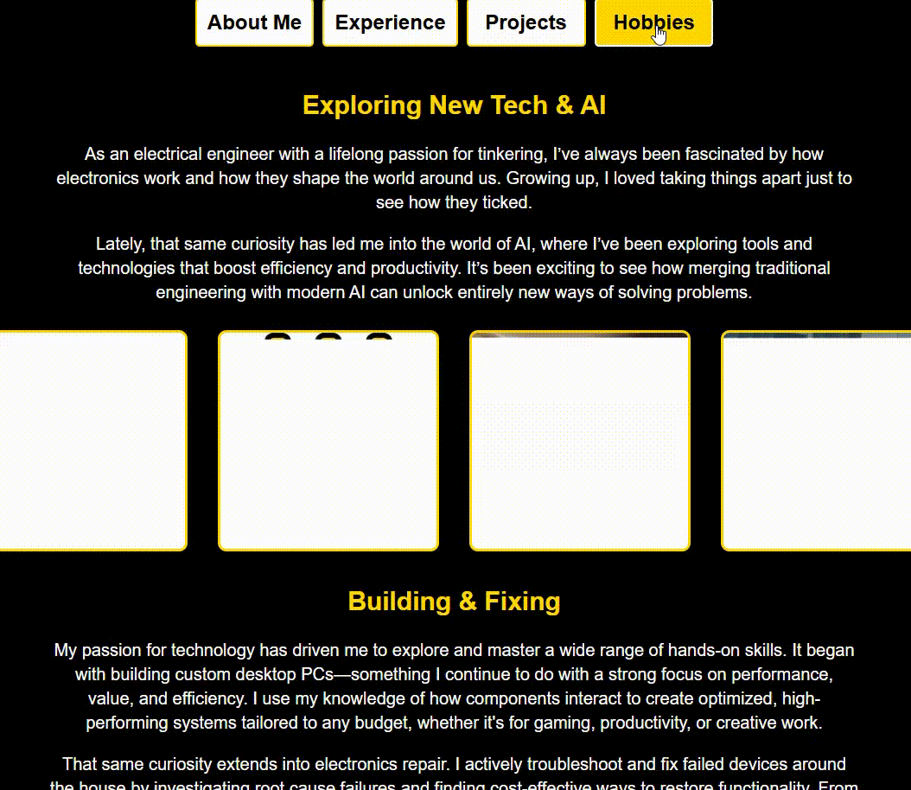

A lot of my work projects are confidential, but here are a few personal ones I'm proud of. Click a project to read about it and watch the video.
Back when I was deep into microcontrollers, I made this video showing how to flash RetroPie onto a Raspberry Pi 3 and load retro game emulators. It was my first real taste of SSH, remote file transfers and installing an OS on a tiny board, and it pushed me toward embedded systems.
One of my first hands-on projects: programming an Arduino to drive addressable RGB LEDs and make them do fun light effects. It was a blast, and it got me hooked on creative electronics.
When the master window switch in my dad's car died (the one that controls all the windows), I decided to figure out why. Along the way I learned how to really use a multimeter and do careful visual inspections to track down and fix the bad parts.
In college I noticed some engineering topics got rushed in lecture. So I started making videos that walk through them the way I wish they'd been taught, with simpler ways to approach the problems. I still upload these to help other engineering students.
A back-to-basics video on series vs. parallel battery setups, plus how to find and replace the bad batteries in an electric moped.
Yep, the site you're on right now! Building it taught me how HTML, CSS and JavaScript work together to make a page look and behave the way you want. It's a fun side project, and I keep tweaking it as I learn more.
